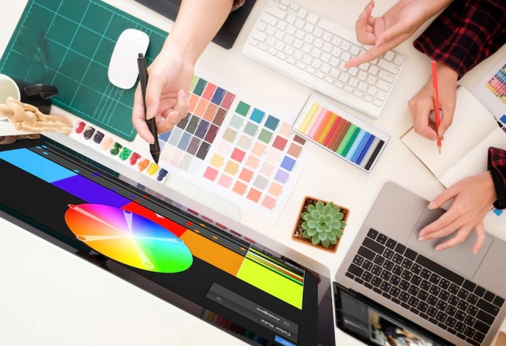

El diseño digital multimedia es una disciplina que combina diferentes formas de medios digitales, como gráficos, imágenes, vídeos, sonido y texto, para crear experiencias interactivas y atractivas.
El diseñador digital elabora imágenes que serán expuestas en una pantalla, no importa si es de una computadora, celular, tablet o videojuego; el diseñador gráfico elabora imágenes tangibles y puede jugar con las texturas. La posibilidad de incluir elementos sonoros en los diseños digitales.
